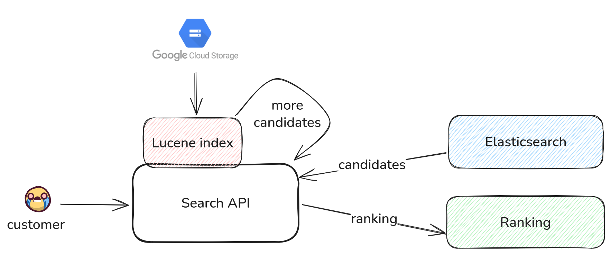

HOW TO CHEAT
AT BENCHMARKING SEARCH ENGINES
Vector Space Day 2025 | Berlin | Roman Grebennikovwhoami

- PhD in CS, quant trading, credit scoring
- Findify: e-commerce search, personalization
- Delivery Hero: food search, LLMs
- Opensource: Metarank, LightGBM4j, Nixiesearch
Vector search at DH
- Started at 2024: off-the-shelf embeddings were bad
- Fine-tuned embeddings: biggest a/b test uplift [MICES'24]
- V1: Embedded Lucene with immutable index

Lucene as a vector search engine?
- pros: tool 3 days to implement, no extra costs
- cons: pod startup, bigger embeddings, latency spikes
Tech debt: should be moved to a proper search engine eventually
Which search engine?
- Data: 2-3M docs, 368-2560 dimension
- High selectivity filtering: by availability
- Low selectivity filtering: by geolocation
Candidates:
ES, OS, Qdrant, Weaviate, Redis, Mongo Atlas, pgvector, ...
Rabbit hole of vendor benchmarks

- Vendor's database is always faster - why?
- Different versions, hardware, datasets and parameters
Shameless plug: Nixiesearch
A stateless search search engine
- Runs over S3 block storage
- Lucene: same engine as Elastic/Opensearch/SOLR

Strawman's benchmark #1
Take all default parameters and measure something latency?

Performance is a spectrum
- Configuration space: efConst, efSearch, m, ...
- No single best configuration: "it depends"
- Depends on data, queries, parameters, hardware
Strawman's benchmark #2
OK let's fix all params and measure latency/recall

Measuring performance
TLDR: fix all params but one, draw precision/recall
What if we don't fix params?
m: [16, 32, 48, 64]
ef_construction: [128, 256, 512]
ef_search: [32, 64, 128]
What if we don't fix params?
m: [16, 32, 48, 64]
ef_construction: [128, 256, 512]
ef_search: [32, 64, 128]
ANN benchmark

- pros: many engines, reproducible
- cons: no filtering/quantization, old engine versions
- cons: no engine specific params
Engine-specific parameters
Example 1: Qdrant default_segment_number
- Qdrant: same ef_search per segment
- Lucene: ef_search shared across segments
TLDR: parameters should be part of search space
Engine-specific parameters
Example 2: Opensearch faiss/lucene search
IMG TODO
TLDR: parameters should be part of search space
> that covers everyone's use cases
My personal use case
- Filtering: low/high selectivity
- Data: Bring-Your-Own-Data
- Quantization: not only qps-recall, but also costs
- Configuration: engine-specific, latest versions
Nice to have: lexical search, leaderboard
HSEB: Hybrid Search Engine Benchmark
https://github.com/hseb-benchmark/hsebHSEB: data
- Eats anything TREC-JSON
- Supports SBERT embeddings
- FAISS-based exact search with filters!
// queries.json
{"_id": 1, "text": "hello, world"}
// corpus.json
{"_id": 1, "text": "greetings"}
$> pip install hseb
$> python -m hseb.preprocess --queries my_queries.json \
--corpus my_corpus.json --model your-preferred-model \
--out my_dataset/
Reference dataset: MSMARCO
https://huggingface.co/datasets/hseb-benchmark/msmarcoDataset params
- Documents: 1K/100K/1M doc sample, 10K queries
- Dims: 384 [minilm], 768 [e5-base], 2560 [qwen3]
- Filters: none, 10% sampling, 90% sampling
// document
{
"id": 123,
"text": "Document content...",
"embedding": [0.1, 0.2, ...],
"tag": [10, 90, 100]
}
Exact search
- top-100 docs and scores
- focus on dot-product (and not cosine!)
{
"id": 456,
"text": "Query text...",
"embedding": [0.3, 0.4, ...],
"results_10_docs": [123, 789, ...],
"results_10_scores": [0.95, 0.87, ...],
"results_90_docs": [123, 456, ...],
"results_90_scores": [0.95, 0.89, ...],
"results_100_docs": [123, 456, ...],
"results_100_scores": [0.95, 0.89, ...]
}
Search engines supported
class EngineBase(ABC):
def start(self, index_args: IndexArgs) -> None: ...
def stop(self, cleanup: bool) -> None: ...
def commit(self) -> None: ...
def index_is_green(self) -> bool: ...
def index_batch(self, batch: list[Doc]) -> IndexResponse: ...
def search(self, search_args: SearchArgs, query: Query, top_k: int) -> SearchResponse: ...
Clients: ES, OS, Redis, Qdrant, Weaviate, Nixiesearch, pgvector
TODO: vespa, FAISS, chroma
Benchmark manifest
engine: hseb.engine.elastic.ElasticsearchEngine
image: elasticsearch:9.1.3
dataset:
dim: 384
name: hseb-benchmark/msmarco
query: "query-all-MiniLM-L6-v2-1M"
corpus: "corpus-all-MiniLM-L6-v2-1M"
batch_size: 1024
experiments:
- tag: float
k: 100
index:
m: [8, 16, 32, 64, 128]
ef_construction: [32, 64, 128, 256, 512]
quant: ["float32"]
kwargs:
heap_size: ["8g"]
search:
ef_search: [32, 64, 96, 128, 192, 256]
filter_selectivity: [10, 90, 100]
REPRODUCE!
- Hardware: AWS c8i.2xlarge, 32GB RAM, 8 vCPU
- Parameters: always committed to git
$> pip install hseb
$> python -m hseb --config configs/elastic/small.yml
// and wait for 20 hours
Results
TODOFiltering: 10% match
TODOFiltering: 90% match
TODOQuantization
disclaimer: not all engines support fp16/int8/int1
TODO